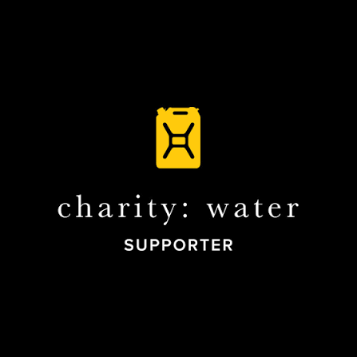

Technical
HTML, CSS, JavaScript, Framer, Content Management Systems, Adobe, Google Workspace, Microsoft Office
Hi, I’m Bryonna. I’m learning how to turn creative ideas into useful, digital experiences.
See my projectsScroll to explore ↓
A LITTLE ABOUT ME
.png)
My name is Bryonna Clarke. I am from Grand Rapids, Michigan. I am currently at Grand Valley State University, studying Communications with a minor in Digital Media and Web Development. I am hoping to pursue a career either as web content manager or user experience specialist. I always knew I had a creative drive and a passion for writing and research. I have completed projects across various topics, such as technical writing, docuement and data design, and web production. These projects I've completed have helped me build the skills needed to succeed in any digital role, whether it is research, innovation, or managment.
Let’s connect →WHAT I’M LEARNING
HTML, CSS, JavaScript, Framer, Content Management Systems, Adobe, Google Workspace, Microsoft Office
Digital Content Development, Copywriting, UX Research, User Testing, Wireframing, Prototyping
Technical Communication, Analytical Thinking, Collaboration, Customer Experience
FEATURED WORK
Explore a selection of my favorite web and design projects.

01 / CMS
A collaborative website design project that introdueces older audiences to LLMs.
View project →02 / Web Development
A web-based event check-in tool for registering and managing attendees.
View project →03 / Web Development

An interactive game that uses a water-drop challenge to promote supporter awareness.
View project →04 / Web Development
An interactive website for exploring space facts and discovering NASA imagery.
View project →05 / Research Design
A user experience redesign presentation for a music recording platform.
View project →06 / Data Design
A data design project that turns research findings into clear, visual insights.
View project →GET IN TOUCH
I’m always happy to meet new people, hear about interesting projects, or simply talk about how to make a positive impact in the digital world.
Back to top ↑